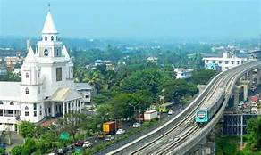

 Ernakulam refers to the eastern, mainland portion of the twin cities of Ernakulam-Kochi in central Kerala, India. Located on the coast of the Arabian Sea, Ernakulam is a booming business metropolis. It is often referred to as the commercial capital of Kerala. Ernakulam has been a part of human settlements since the Stone Age. Rock-cut caves and dolmens are still a part of this city .The densely populated Ernakulam District embodies the achievements of the Kerala State in literacy, industry, trade and commerce. With an inclusive culture, relatively high per capita income and an unstoppable interest of the people in updating themselves of the political, economic, social and cultural happenings in the national and international spheres, Ernakulam represents the high modern phase of the Kerala society. |
MUNNAR 
The unending expanse of tea plantation and rolling hills in Munnar make it look like a picture from a postcard. Munnar is a great holiday destination in Kerala loved by many travellers. It is the most popular hill station which is preferred by honeymooners, family vacationers as well as nature lovers. Situated in Idukki District of Kerala, Munnar holds the secret of producing one of India's best teas and spices. This must-visit place has many experiences in its store for tourists of all kinds. Visitors can see the genesis and growth of tea at the Tea Museum that houses photographs, machinery and various other things which speak about the history and origin of tea plantations in Munnar. Reaching here can be a great experience too as one can take a cycle tour of the region. |
PALAKAD 
Palakkad is the gateway to Kerala due to the presence of the Palakkad Gap in the Western Ghats. Malayalam is the official language in Palakkad. The district has many small and medium rivers, which are tributaries of the Bharathapuzha River. palakkad has a tropical wet and dry climate. Temperatures remain moderate throughout the year, with the exception being March and April, the hottest months. A very high amount of precipitation is received in Palakkad, mainly due to the South-West monsoon. |